КОЛЛЕКЦИЯ ПРОЕКТА
У каждого жеста — свой голос.
Десятки людей. Десятки историй.
Ни одного случайного жеста.
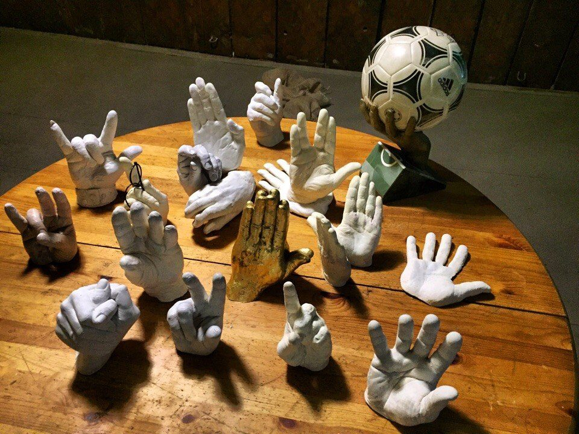
ПРОЕКТ «РУКИ» · ИЛЬЯ ВЕРЕСК
Ваши руки. Ваша история. Сохранённая в гипсе.
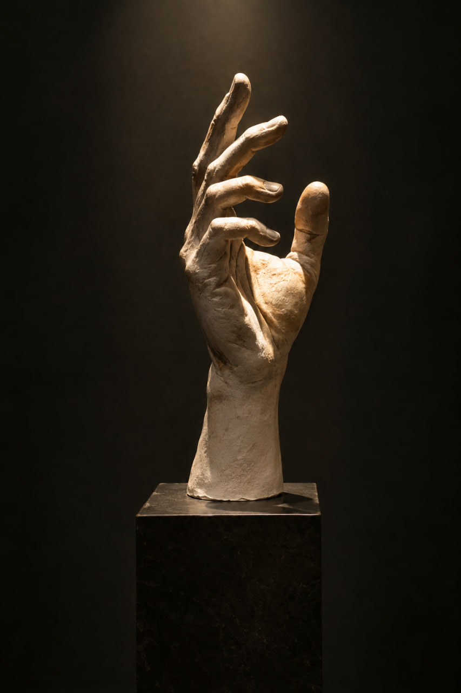
ФОРМА ЧУВСТВ.Мы приезжаем к вам, снимаем слепок рук
и создаём персональную скульптуру из гипса.
КОЛЛЕКЦИЯ ПРОЕКТА
Десятки людей. Десятки историй.
Ни одного случайного жеста.

ВАША ИНДИВИДУАЛЬНОСТЬ
Рельеф кожи. Изгибы пальцев.
Ваш уникальный жест в скульптуре.
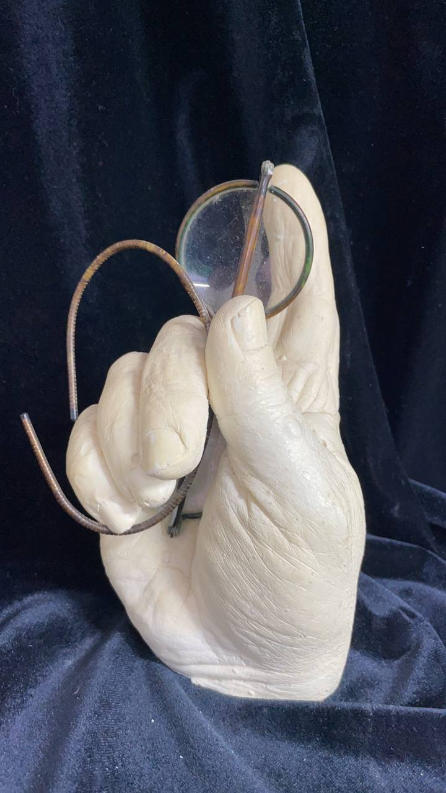
От руки к скульптуре ›ЛЮДИ VERESK · С 2016 ГОДА
Музыка, искусство, театр и спорт.
Личная история каждого — часть нашего проекта.
Борис Гребенщиков
Олег Басилашвили
Полина Осетинская
Фёдор Конюхов
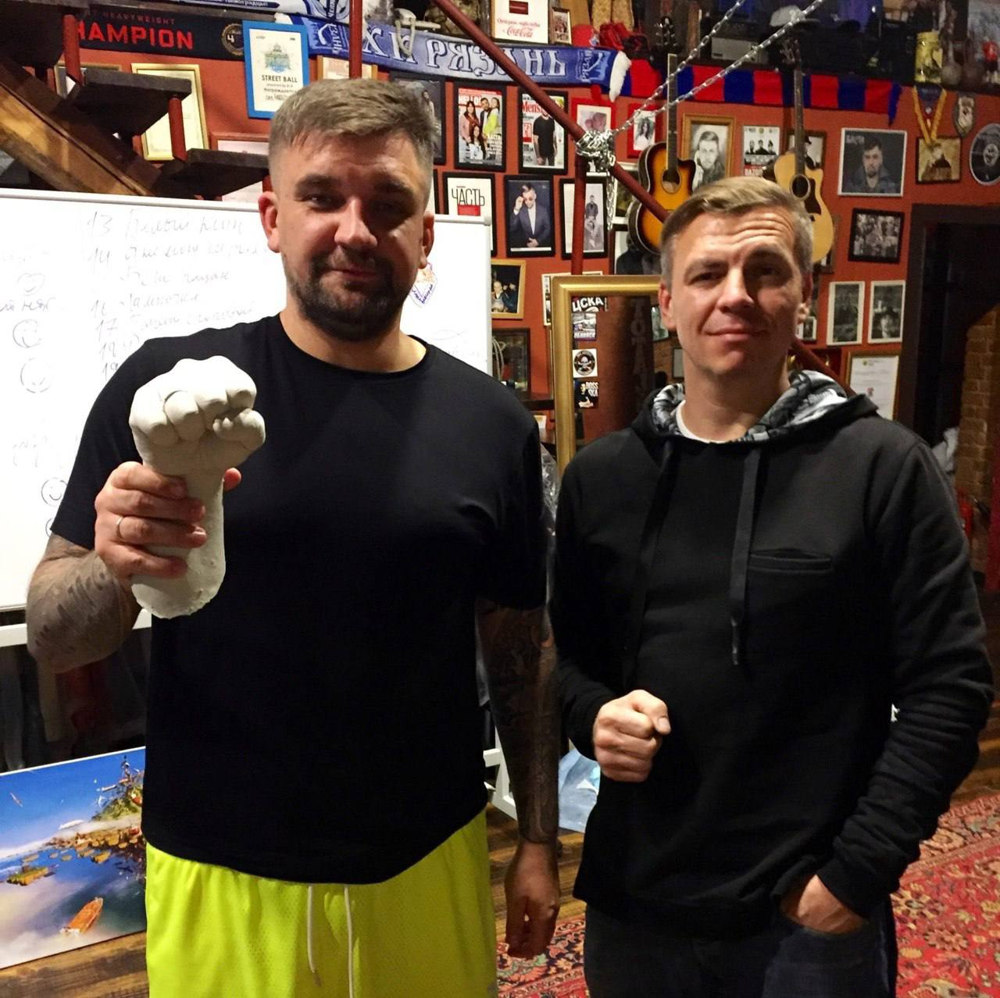
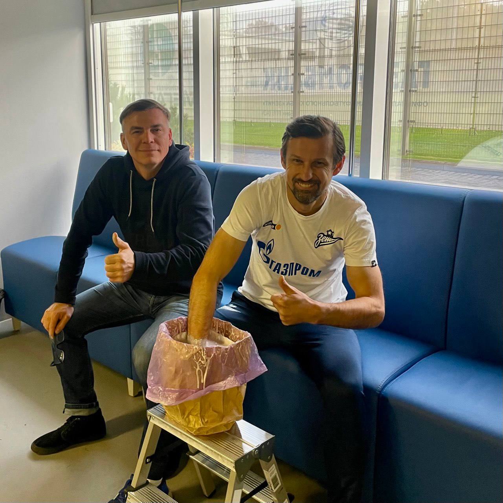
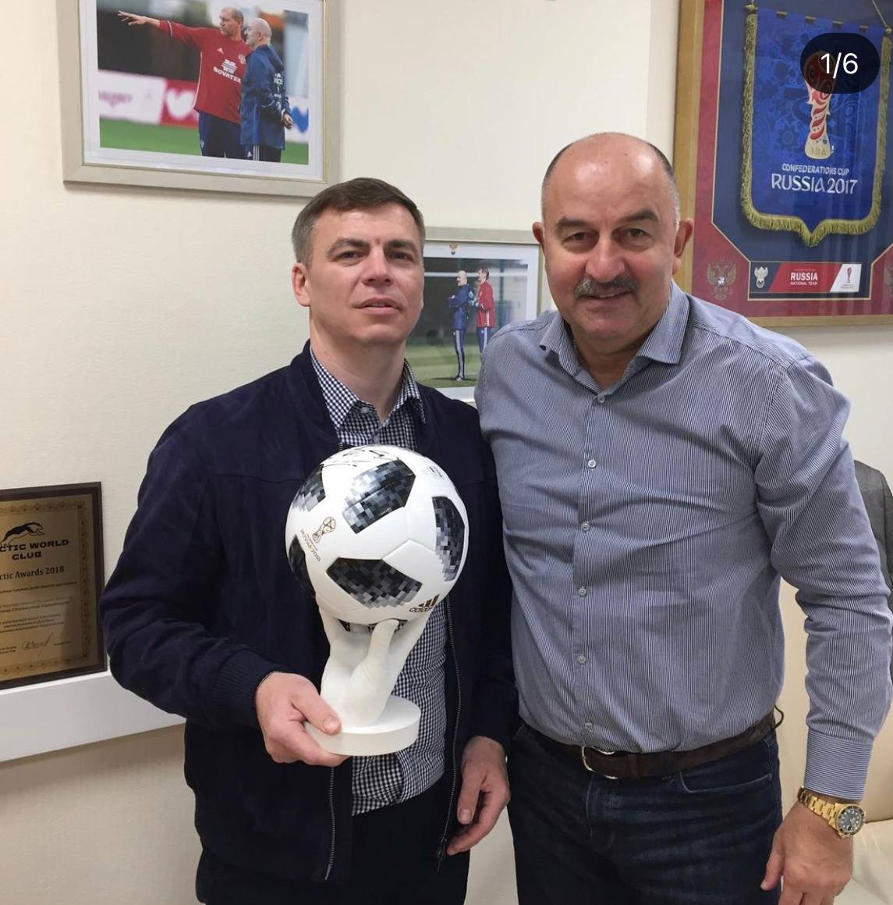
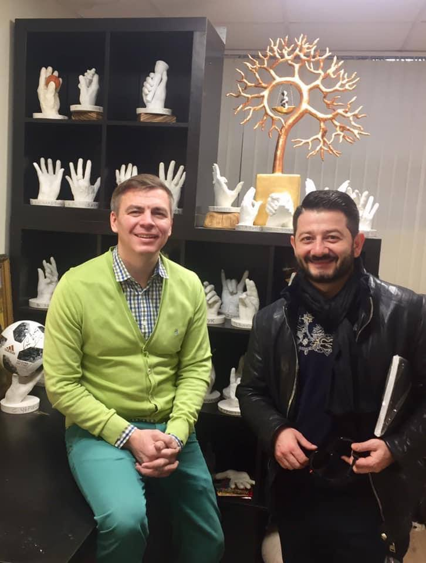
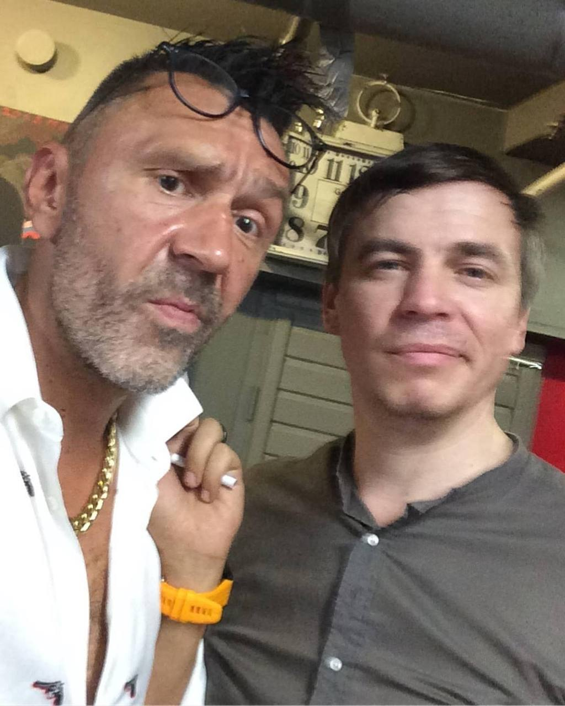
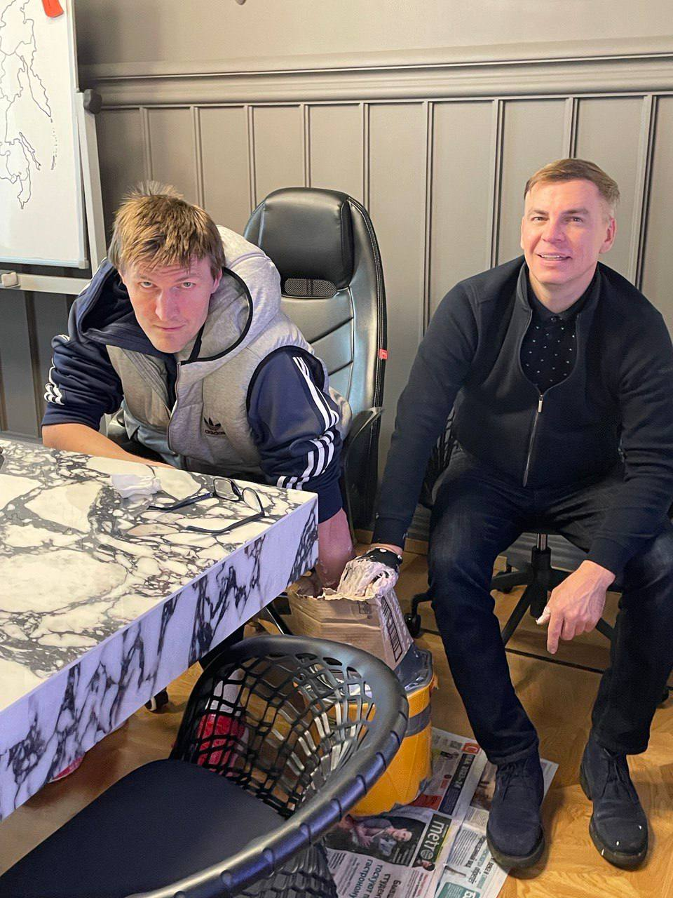
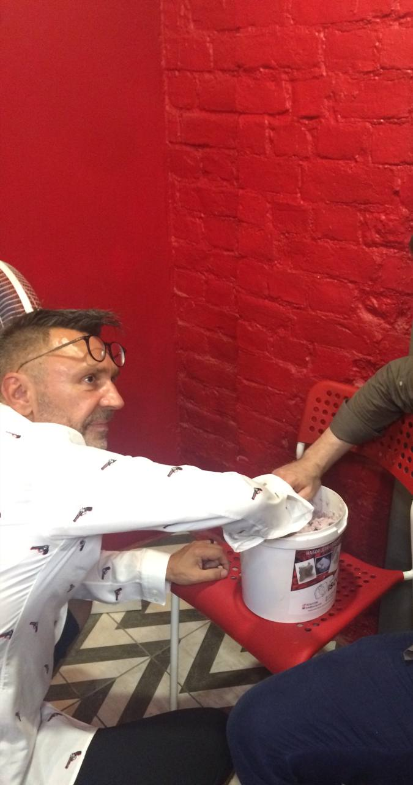
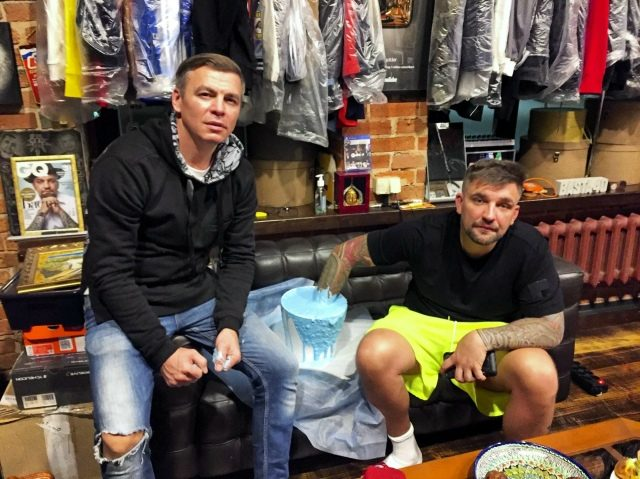
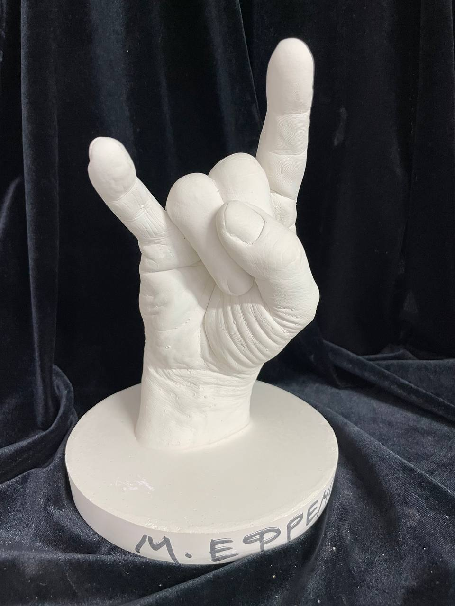
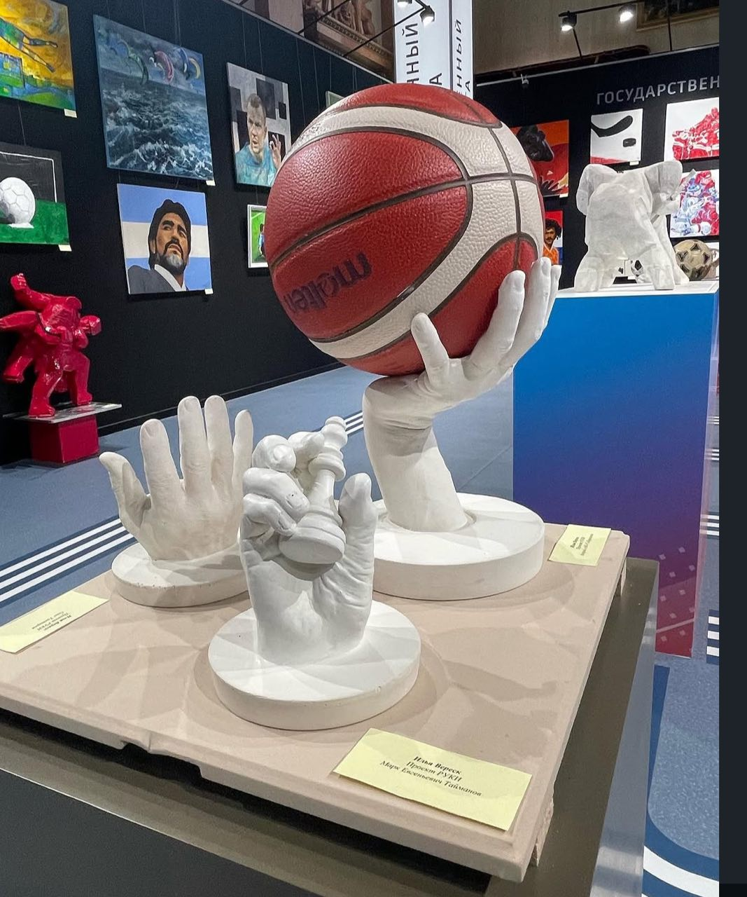
57 записей · 2016–2026
«Аквариум»
«Пилот»
Солнечный клоун
«7Б»
Художник
Композитор
«Зенит»
«Крематорий»
«АукцЫон»
«Ногу свело!»
Писатель
«Сурганова и оркестр»
Шахматист
Актёр, спортсмен
Камнерез, художник
Пианистка
«Н.О.М.»
«Ленинград»
«Билли’с Бэнд»
«НЭП»
«Калинов мост»
Ювелир
Художник
DJ Грув
«Секрет»
«Маша и медведи»
Ничего не найдено. Попробуйте другое имя или год.
ОТ ПРИКОСНОВЕНИЯ К ИСКУССТВУ
Вы выбираете момент.
Мы помогаем придать ему форму.
Обсудим, какую историю вы хотите сохранить, композицию и детали проекта.
Согласуем место и время. Приедем к вам, чтобы лично снять слепок рук.
Отольём работу из гипса и доведём детали. Сроки и передачу обсудим при заказе.
ПРОЕКТ «РУКИ» ИЛЬИ ВЕРЕСКА
«Руки» — авторский проект художника Ильи Вереска. С 2016 года коллекция объединяет жесты музыкантов, актёров, художников и спортсменов. У каждой скульптуры — свой характер. За каждой — личная встреча.
Больше о проекте в Instagram ↗Публикации, интервью и выставки.
Репортаж с открытия Veresk night art gallery.
Читать публикацию ↗FIESTA · ИНТЕРВЬЮИстория коллекции неповторяющихся жестов.
Читать интервью ↗СПОРТ ДЕНЬ ЗА ДНЁМ · 2023Экспозиция в Государственном музее спорта Санкт-Петербурга.
Читать публикацию ↗СЛЕДУЮЩАЯ ИСТОРИЯ — ВАША
Расскажите о своей идее. Обсудим выезд,
композицию и стоимость вашего проекта.
Напишите Илье в Telegram или на почту: расскажите об идее, укажите город и удобные даты. Вместе обсудим детали личной встречи.
Стоимость согласовывается для вашего проекта. Напишите, какую композицию вы хотите, — обсудим исполнение, выезд и цену.
Мы приезжаем к вам и лично снимаем слепок. Укажите город и желаемое место встречи, чтобы согласовать возможность выезда.